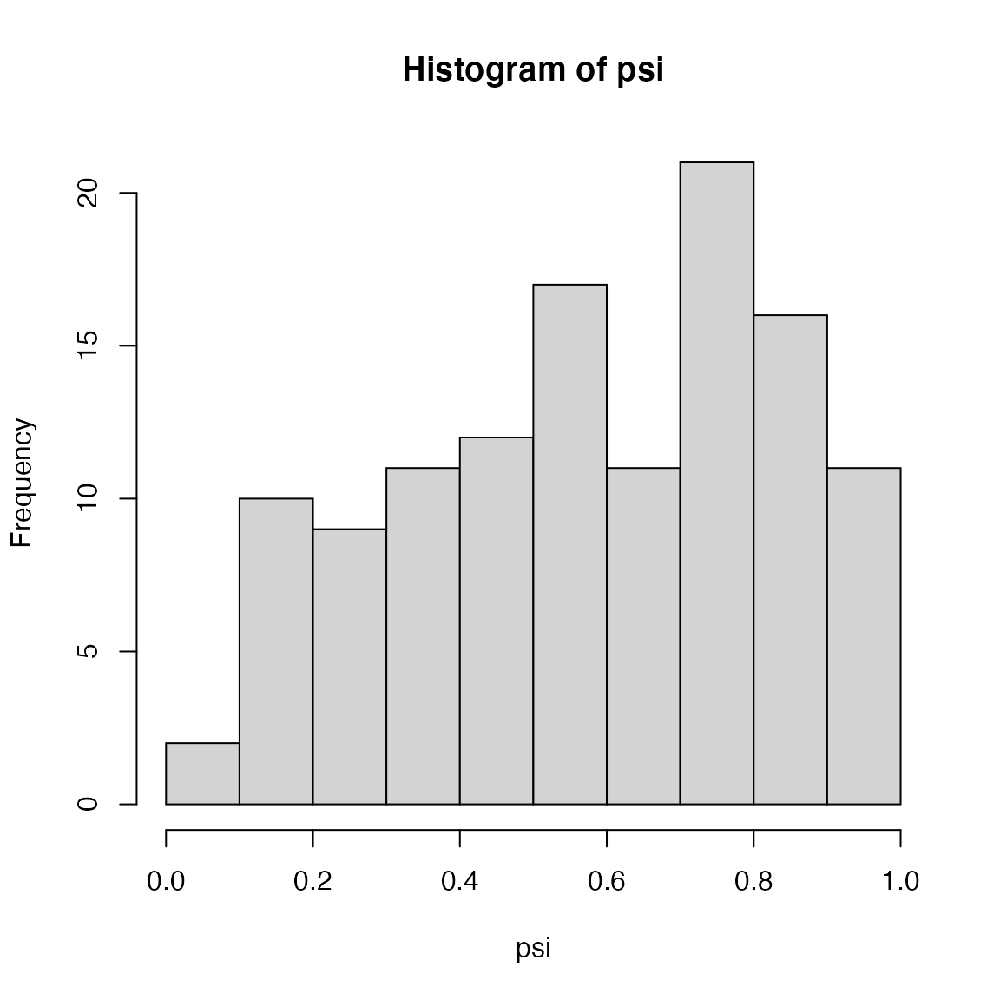

Estimating species richness using hierarchical occupancy models
WILD6900
2021-01-05
multi_spp_occ.RmdAn important goal of many ecological studies is estimating the richness (i.e., the number of species) of a particular site or region. One of the primary challenges of estimating richness is that some species will not be detected during the surveys. As a result, we will often underestimate richness if we take it to be the number of observed species.
In this lab, we will continue to explore fitting site-occupancy models in JAGS by developing a multi-species model that accounts for imperfect detection. This model treats both occupancy probability \(\psi\) and detection probability \(p\) as species-level random effects. The benefit of the hierarchical structure is that, by using data augmentation, we can estimate \(\psi\) and \(p\) of species that were not detected and therefore obtain estimates of richness that correct for imperfect detection! Confused? That’s ok. Hopefully simulating data and writing the model will help.
Simulating the data
As in all site-occupancy models, we imagine conducting K replicate surveys at J sites. In the multi-species model, we also need to set the true species richness R. For this example, we’ll assume:
## Number of species (richness)
R <- 120
## Number of sites surveyed
J <- 15
## Number of visits per site
K <- 3Next, we will simulate the species-specific occupancy and detection probabilities. We will do this in a hierarchical way: first set the overall mean occupancy probability for the entire community and the variance among species. Then generate the species-specific value from this distribution. Many communities are dominated by lots of rare and elusive species, with a few common species. As such, we’ll set the mean occupancy probability to a low values but allow for some high values:
## Mean occupancy probability
mu.psi <- 0.6
## Covert to logit-scale
lmu.psi <- qlogis(mu.psi)
## Occupancy sd (and precision)
sd.psi <- 1.25
tau.psi <- 1/sd.psi^2
## Species-specific occupancy probability
lpsi <- rnorm(n = R, mean = lmu.psi, sd = sd.psi)
psi <- plogis(lpsi)
hist(psi)
Now the detection probabilities:
## Mean detection probability
mu.p <- 0.2
## Covert to logit-scale
lmu.p <- qlogis(mu.p)
## Detection sd (and precision)
sd.p <- 1
tau.p <- 1/sd.p^2
## Species-specific detection probability
lp <- rnorm(n = R, mean = lmu.p, sd = sd.p)
p <- plogis(lp)
hist(p)
Next, we simulate the true occupancy status of each species at each site. First create an empty \(R \times J\) matrix, then fill in the site-specific occupancy for each species using the rbinom() function and the species-specific occupancy probabilities:
## True occupancy at each sites
z <- matrix(NA, nrow = R, ncol = J)
for(i in 1:R){
z[i, ] <- rbinom(n = J, size = 1, prob = psi[i])
}Finally, we simulate the observations. Last week, we treated each occasion \(K\) as a separate Bernoulli trial. In the case, we’ll use a different formulation by noting that the number of successes out of \(K\) Bernoulli trials (all with the same \(p\)) can also be modeled using a binomial model with size \(K\):
## Observed occupancy at each sites
y <- matrix(NA, nrow = R, ncol = J)
for(i in 1:R){
for(j in 1:J){
y[i, j] <- rbinom(n = 1, size = K, prob = z[i,j] * p[i])
}
}This simulated data contains some species that have all 0 detections. In a real study, we would of course not have these entries. So the next step is to remove them from our data:
Data augmentation
The current object y is what we would “observe” in a real study. No species with all 0 detection histories. But to account for imperfect detection, we need to add some all 0 detections back into the data. So we will create a matrix with all 0 detections for some large-ish number of species (we choose a number that we suspect is bigger than the true number of “missing” species, keeping in mind that the more we add, the longer it will take to fit our model). In this case, we’ll augment our data with 40 “potentially fake” species:
## Add augmented individuals
nAug <- 40
aug_mat <- matrix(0, nrow = nAug, ncol = J)
y.aug <- rbind(y, aug_mat)In the model, we will try to determine which of these augment species are real (they were in our sample but we didn’t detect them) and which are fake.
The multi-species model
Next, let’s write out the full model. At the top of the hierarchy, we need to decide which species are real and which are fake. We will define a random Bernoulli variable \(x_i\) that is 1 for real specie and 0 for fake species with probability \(\omega\) (or course for species that we detected, we know \(x_i\) is 1)
\[\Large x_i \sim Bernoulli(\omega)\]
Next, we need to model the occupancy status of each species \(i\) at each site \(j\):
\[\Large z_{i,j} \sim Bernoulli(x_i \psi_i)\]
To treat species as random effects in this model, we will specify a distribution for the species-specific occupancy probabilities:
\[\Large logit(\psi_i) \sim normal(\mu_{\psi}, \tau_{\psi})\]
Next, we model the observations:
\[\Large y_{i,j} \sim binomial(z_{i,j}p_i, K)\]
where \(y_{i,j}\) is the number of visits where species \(i\) was detected at site \(j\) (out of \(K\)).
As for \(\psi_i\), we will treat \(p_i\) as a species-specific random effect:
\[\Large logit(p_i) \sim normal(\mu_{p}, \tau_{p})\]
So this model has five parameters: \(\omega\), \(\mu_{\psi}\), \(\tau_{\psi}\), \(\mu_{p}\), and \(\tau_{p}\).
We can also define a derived variable to estimate richness:
\[\Large R = \sum_{i=1}^M x_i\]
Based on these details, let’s write the model in JAGS:
Model fitting
Now we’re ready to fit the model. As in the other occupancy models we’ve seen, initial values for \(x\) and \(z\) are important (remember that we need \(x\) and \(z\) for the full augmented data set):
## Bundle data
jags.data <- list(M = dim(y.aug)[1], J = dim(y.aug)[2], K = K, y = y.aug)
## Initial values
z.init <- y.aug
z.init[z.init > 0] <- 1
inits <- function(){list(omega = runif(1), mu.psi = runif(1), mu.p = runif(1),
sd.psi = runif(1, 0, 1), sd.p = runif(1, 0, 1),
z = z.init,
x = apply(z.init, 1, max))}
## Parameters to monitor
params <- c("mu.psi", "mu.p", "sd.psi", "sd.p", "omega", "R")
## MCMC settings
nc <- 3
ni <- 50000
nb <- 5000
nt <- 1
fit <- jagsUI::jags(data = jags.data, inits = inits, parameters.to.save = params,
model.file = "inst/jags/Mult_spp_occ.jags",
n.chains = nc, n.iter = ni, n.burnin = nb, n.thin = nt,
parallel = TRUE)As always, check for convergence:
Assuming the model converged, how close was our estimated richness to the true value?